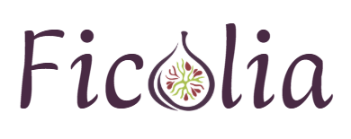

Valeurs à appliquer à tous les écrans à partir de l'étape 1. Ce qui reste ouvert est dit comme tel. Les écrans actuels de la direction consolidée ne les appliquent pas encore : ils seront mis à jour à l'étape 1.
Couleurs de verdict — palette « Retenue », choix du 30/09
Niveau 1Composition sans signal identifié
#CADCA4Texte noir · 14,3:1Luminance 0,664Pastille pâle #ECF3DFéchelle, niveau 1
Niveau 2Composition à signal modéré
#E7B93FTexte noir · 11,4:1Luminance 0,520Pastille pâle #F7E6BCéchelle, niveau 2
#B8192CTexte blanc · 6,5:1Luminance 0,111Pastille pâle #E6AEB5échelle, niveau 4
OrdreLuminance strictement décroissante : 0,664 · 0,520 · 0,305 · 0,111. L'ordre est conservé en simulation de deutéranopie, de protanopie et de tritanopie (VERROU-4).
LimiteEntre niveaux voisins, le contraste est faible : 1,25:1 entre 1 et 2, 1,61:1 entre 2 et 3, 2,21:1 entre 3 et 4. En deutéranopie, la paire la plus proche est 2 et 3. C'est sans effet de sécurité parce que le libellé porte le verdict (T-219), mais la limite est à écrire.
Niveau 4#B8192C et non #9F3542 : le #9F3542 est le grenade de la marque, qu'aucune couleur de verdict ne doit rappeler (D-115, T-548).
TexteNoir pur sur les niveaux 1 à 3, blanc sur le niveau 4. Le blanc ne tient pas sur le niveau 3 (2,96:1).
RéservationCes quatre couleurs ne servent qu'aux verdicts : cadre, badge, pastilles de l'échelle, repère de l'ingrédient déterminant. Aucune couleur de marque près d'un verdict (D-115, T-548).
Écart au registreD-107 inscrit la palette « Ajustée » (#CADCA4 · #CB9A19 · #A6491A · #71262F). Ton choix du 30/09 la remplace : le registre est à corriger, avec ton accord.
Couleurs d'interface — séance du 28/09
Fond · #FFFFFFFond de tous les écrans.
Cadre · #FAF8F4Cartes, rangées, barre d'onglets. Se distingue du blanc par sa bordure (1,06:1 sans elle).
Bordure · #E7E1DAContour des cadres. Décor : ne porte aucune information.
Texte · #321C3115,6:1 sur blanc, 14,7:1 sur #FAF8F4. Hors du cadre coloré.
Texte secondaire · #6E5A6BMarque et contenance, légendes. 6,3:1 sur blanc, 5,9:1 sur #FAF8F4.
Élément actif · #4C2944Onglet actif, bouton principal, cœur. 12,3:1 sur blanc. Jamais sur un écran de verdict.
Décor · #D6CEC6Points de pagination inactifs, contour des pastilles pâles. Ne porte aucune information.
Caméra · #1E1A1EFond du scanner plein écran.
Marque, hors interface courantePistache #9EBE59Grenade #9F3542Ivoire rosé #FFF7F0Logo et supports de marque ; jamais près d'un verdict (D-115). L'ivoire rosé reste le texte du bouton principal (11,6:1 sur aubergine).
Typographie
Marque : logo et grands titres seulement (D-115)

Variante manuscrite, posée sur l'accueil le 30/09. Choix ou candidate : à confirmer (T-558).
FicoliaAntic Didone
FicoliaPompiere
FicoliaSimonetta italique
Pompiere, décorative, est illisible en petite taille : jamais dans l'interface (D-115).
Interface : Atkinson Hyperlegible Next, choix du 01/10 (D-115, T-558)Une seule famille pour tout le texte de l'interface. Exemples ci-dessous dans cette police.
Libellé du verdict30 · grasComposition à signal modéré
Nom du produit, écran produit26 · grasLait corps nourrissant
Titre d'écran19 · grasGrossesse
Rangées, corps17Ingrédients et rôle de chacun
Phrase sous le libellé16Au moins un ingrédient évalué fait l'objet de données nuancées…
Texte secondaire14Marque exemple · 250 ml
Dans l'application, ces tailles suivent le réglage de taille du téléphone : jamais figées (T-220, T-559). Les intitulés de section en capitales espacées se décident avec la police.
Composants déjà en place
Bouton rond, 44 pxRetour, son, lampe. Sur un écran de verdict : pictogramme neutre, jamais aubergine.
CœurContour ou plein, aubergine. Son emplacement seulement : pas de favoris au lancement (T-158).
ContinuerBouton principalPleine largeur, 56 px. Jamais sur un écran de verdict.
GrossesseRangée de ligneÉcran produit : deux rangées de même poids, grossesse d'abord, sans pastille.
Signaler une erreurLien discretSignalement, hors de la liste des ingrédients (T-217).
Lait corps nourrissantMarque exemple · 250 ml
Carte produit et échelleIdentité gardée avec le verdict (T-213) ; paliers sans mention visible, « Niveau n sur 4 » pour les lecteurs d'écran.
À venir, étape par étape : bandeau neutre (rappel de lot), cadre neutre (verdict incomplet), volet de première alerte, panneau à quatre champs, formulaire, états sans verdict.
Accessibilité — les trois prérequis du plancher et leurs suites (D-58, T-388)
Libellés alternatifsTout bouton-pictogramme porte un nom (retour, son, lampe, cœur). L'échelle porte « Niveau n sur 4 » pour les lecteurs d'écran.
CiblesAu moins 44 × 44 px.
StructureUn titre par écran, des intitulés de section, le verdict dans une région nommée.
ContrasteTexte au moins 4,5:1 : mesures ci-dessus.
CouleurJamais seule porteuse d'information : le libellé porte le verdict (T-219, T-220).
Taille du texteJamais figée ; le cadre de verdict doit rester lisible en texte agrandi, avec des phrases de 100 à 106 caractères (T-559) : variante à l'étape 1.
Ce qu'on ne dit pasAucune conformité aux normes d'accessibilité n'est revendiquée (D-58, L-24).